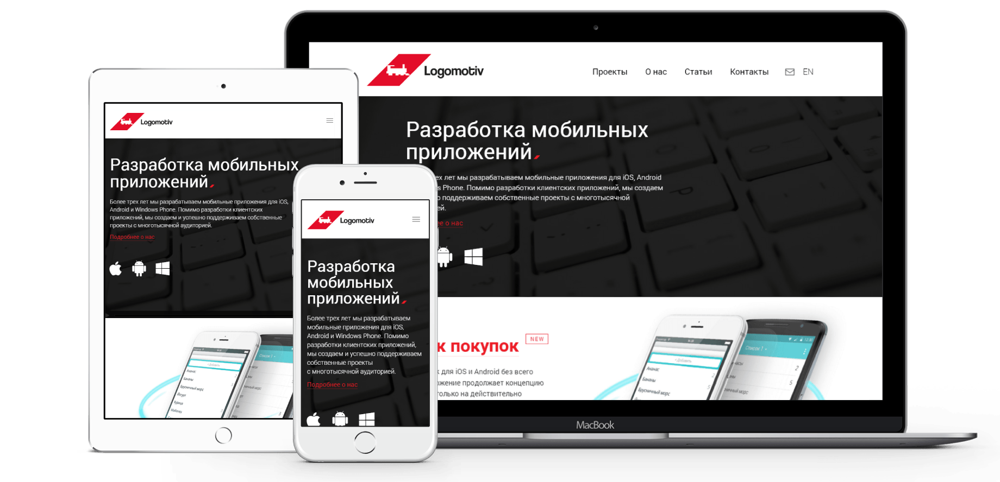
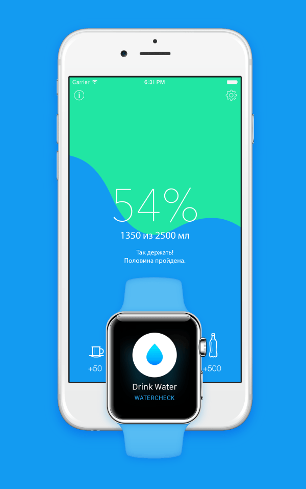
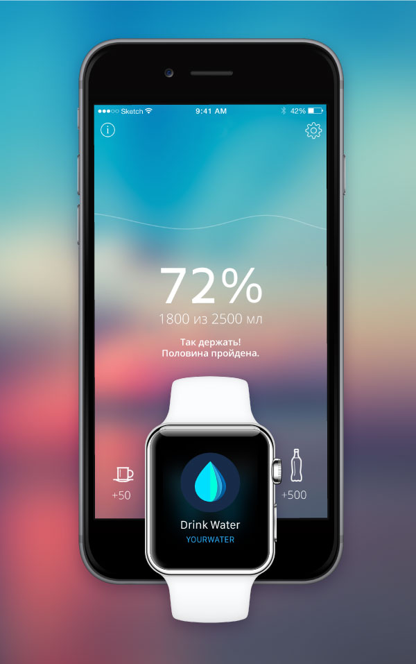
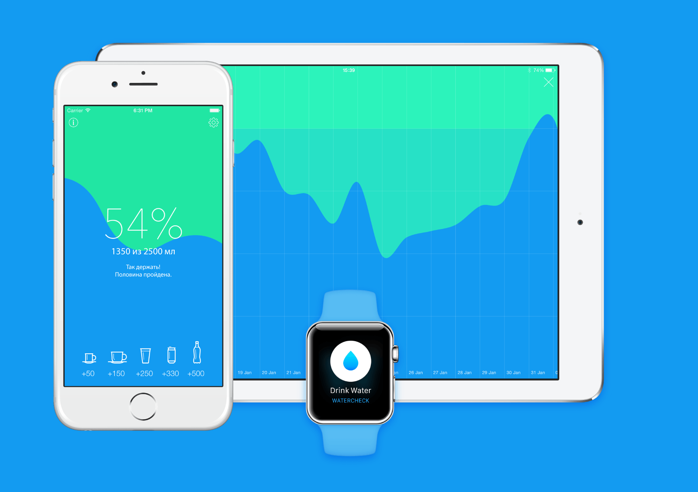
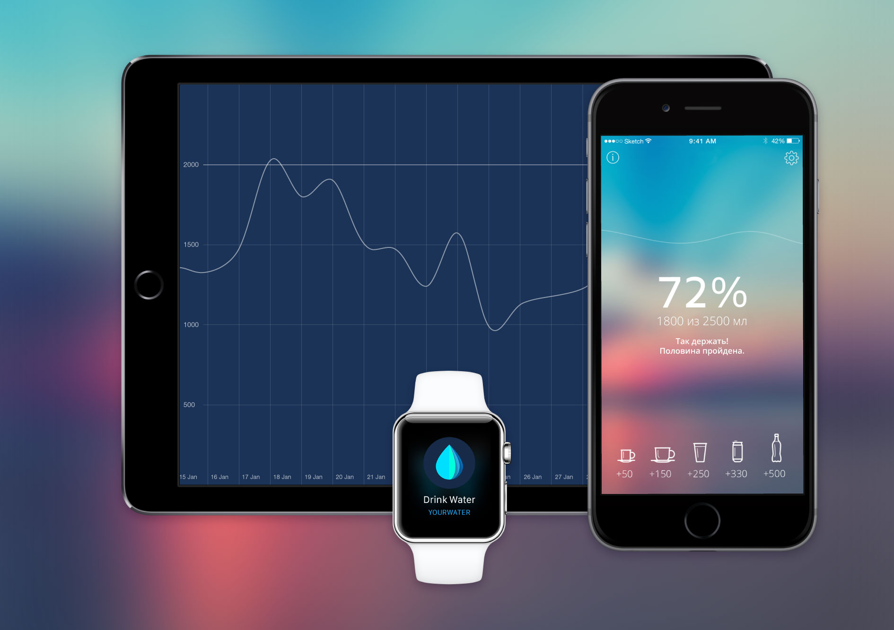

<!DOCTYPE html>
<html lang="ru">

</html>

<head>
  <title>Дизайн и разработка сайта для студии Logomotiv Apps</title>
  <meta charset="UTF-8" />
  <meta http-equiv="content-type" content="text/html; charset=UTF-8" />
  <meta http-equiv="x-ua-compatible" content="ie=edge" />
  <meta name="viewport" content="width=device-width, initial-scale=1.0" />
  <meta name="MobileOptimized" content="320" />
  <meta name="HandheldFriendly" content="true" />
  <meta name="description" content="Сайт-портфолио дизайнера Вадика Матвеева. Разработка дизайна сайтов, приложение, логотипов, айдентики и фирменных стилей" />
  <meta name="keywords" content="apps, мобильные приложения, mobile, iOS, Android, Windows Phone, iPhone разработка, разработка мобильных приложений" />
  <link rel="author" href="humans.txt" />
  <link href="http://fonts.googleapis.com/css?family=Roboto:100,300,400,700,400italic&amp;subset=cyrillic-ext" rel="stylesheet" type="text/css" />
  <link href="../css/main.css" rel="stylesheet" />
  <!-- ----------- FAVICON --------------->
  <link rel="apple-touch-icon" sizes="180x180" href="/img/favicon/apple-touch-icon.png" />
  <link rel="icon" type="image/png" href="/img/favicon/favicon-32x32.png" sizes="32x32" />
  <link rel="icon" type="image/png" href="/img/favicon/favicon-16x16.png" sizes="16x16" />
  <link rel="manifest" href="/img/favicon/manifest.json" />
  <link rel="mask-icon" href="/img/favicon/safari-pinned-tab.svg" color="#5bbad5" />
  <meta name="msapplication-TileColor" content="#262626" />
  <meta name="msapplication-TileImage" content="/img/favicon/mstile-144x144.png" />
  <meta name="theme-color" content="#ffffff" /> </head>

<body class="logomotiv">
  <header class="header">
    <div class="header__container">
      <a href="#" class="header__sandwich"></a>
      <a href="../" class="header__logo"> <svg version="1.1" id="main-logo" xmlns="http://www.w3.org/2000/svg" xmlns:xlink="http://www.w3.org/1999/xlink" x="0px" y="0px" class="logo" width="122px" height="40.9166679px" viewBox="0 0 122 40.9166679" enable-background="new 0 0 122 40.9166679"
          fill="#fff" xml:space="preserve">
          	<g>
          		<polygon points="21.8790302,40 41.9587288,40 62.0385284,1 41.9587288,1 	"/>
          		<polygon points="62.0385284,40 82.1183319,40 102.1983261,1 82.1183319,1 	"/>
          		<g>
          			<polygon points="104.0096283,4.3382306 93.9697266,23.9472656 102.1983261,40 122.2782288,40 		"/>
          		</g>
          		<g>
          			<polygon points="20.06213,36.85466 30.1019306,17.1427612 21.8736305,0.987061 1.7936296,0.987061 		"/>
          		</g>
          		<polygon points="60.2272301,36.85466 70.2670288,17.1428604 63.850029,4.543961 53.8102303,24.2555618 	"/>
          	</g>			
          </svg> </a>
      <a href="durecipes_app.html" class="header__next"> <span class="header__next-word">Следующий</span></a>
      <nav class="header__nav">
        <ul class="header__nav-list">
          <li class="header__nav-item"><a href="../projects.html">Проекты</a></li>
          <li class="header__nav-item"><a href="https://medium.com/@fooontic">Блог</a></li>
        </ul>
      </nav>
    </div>
    <div class="site-cache"></div>
  </header>
  <section class="logomotiv__promo">
    <div class="logomotiv__promo-img-inner"></div>
  </section>
  <section class="project">
    <div class="container-fluid">
      <div class="row">
        <div class="col-xs-12 col-lg-4">
          <h2 class="project__title">Logomotiv Apps</h2>
          <h4 class="project__subtitle">Сайт для студии разработки приложений</h4>
          <p class="project__year">Лето 2015</p>
        </div>
        <div class="col-xs-12 col-sm-9 col-lg-6">
          <p class="project__flow">Задача сделать адаптивный сайт по разработке мобильных приложений отдельный от основного сайта студии. Целевая аудитория нового сайта заказчики с запада, по этой причине сайт сделан в двух языковых версиях.<br><br>Мною спроектирован дизайн сайта,
            сделаны подачи большей части проектов и верстка. В ходе проектирования решили сознательно отказаться от системы администрирования сайтом. по этой причине разработал легкую систему шаблонов на Jade с необходимыми блоками для добавления новых
            проектов и статей без серьезных познаний в верстке и веб-технологиях.<br><br><a href="http://logomotivapp.ru/" class="link">logomotivapp.ru</a></p>
        </div>
        <div class="col-xs-12 col-sm-3 col-lg-2">
          <div class="project__madein project__madein--logomotiv">
            <p>Проект выполнен в и для<br><a href="http://logomotivapp.ru/" class="link">Дизайн-&nbsp;студии Logomotiv</a></p>
            <p>Арт-директор: Иван&nbsp;Большов</p>
            <p>Старший дизайнер: Антон&nbsp;Нестеров</p>
          </div>
        </div>
      </div>
    </div>
  </section>
  <section class="logomotiv__video-inner">
    <div class="row">
      <div class="logomotiv__video"> <video autoplay="autoplay" loop="loop" muted="muted" poster="../video/logomotiv__main.png">
          <source src="../video/logomotiv__main.webm" type="video/webm"/>
          <source src="../video/logomotiv__main.mp4" type="video/mp4"/>
        </video> </div>
      <div class="col-xs-12 col-md-10 col-md-offset-2 col-lg-7 col-lg-offset-4 col-xl-8">
        <p class="project__flow">В списке портфолио не только сделанные приложения, но те которые уже в разработке.</p>
      </div>
    </div>
  </section>
  <section class="logomotiv__case">
    <div class="row">
      <div class="logomotiv__case-compare logomotiv__case-compare--xs hidden-md-up">
        <div class="logomotiv__compare-inner">
          <div class="compare-slider twentytwenty-container"></div>
        </div>
      </div>
      <div class="logomotiv__case-compare logomotiv__case-compare--md hidden-sm-down">
        <div class="logomotiv__compare-inner">
          <div class="compare-slider twentytwenty-container"></div>
        </div>
      </div>
      <div class="col-xs-12 col-md-10 col-md-offset-2 col-lg-7 col-lg-offset-4 col-xl-8">
        <p class="project__flow">Запоминающиеся интерактивные подачи проектов.</p>
      </div>
    </div>
  </section>
  <footer class="footer">
    <div class="container-fluid">
      <div class="row">
        <div class="likely-inner col-xs-12 col-md-6 col-md-push-6"><span class="share">Поделиться </span>
          <div class="likely likely-big">
            <div data-via="fooontic_" class="twitter"></div>
            <div class="facebook"></div>
            <div class="vkontakte"></div>
            <div data-text="Зацени-ка" class="telegram"></div>
          </div>
        </div>
        <div class="col-xs-12 col-md-6 col-md-pull-6">
          <div class="footer__copyright">© 2015</div>
          <div class="footer__mail">Пишите мне на <a class="link">fooontic@gmail.com</a></div>
        </div>
      </div>
    </div>
  </footer>
  <script src="../js/main.min.js"></script>
  <script>
    $(window).load(function()
    {
      $(".compare-slider").twentytwenty(
      {
        default_offset_pct: 0.5
      });
    });
  </script>
</body>